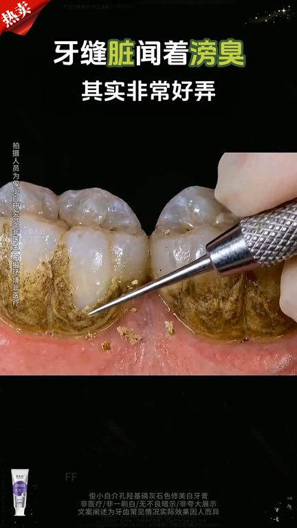
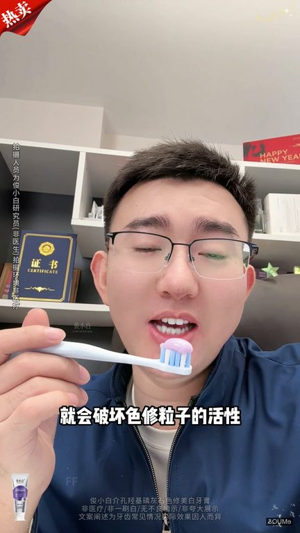
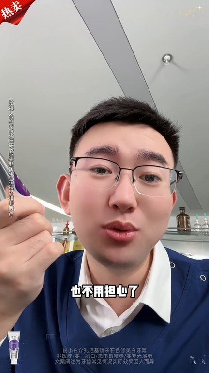
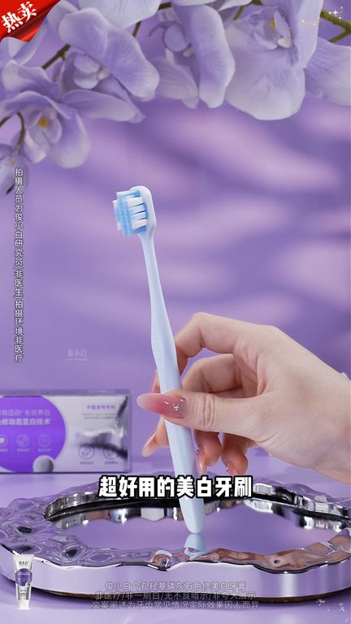

TOP 1 · 代表素材深度拆解
核心放量 点击承压
视频为原始素材 HTTPS 链接；点击后加载，建议在网络环境良好时播放。
45.9万素材消耗
1.71%CTR
13.4%类目消耗占比
-0.57pp较类目均值
表现判断
该素材是类目内第 1 名，属于“核心放量”；CTR 低于类目均值。消耗体现承接规模，CTR 体现首屏与定向效率，两项应结合判断，不能仅以单指标下结论。
表达标签
口播三段式证据
开场钩子你看看看清楚了吗它是化掉的你看长字都被分解下来了如果你也是这种牙齿那我强烈推荐你去用这款牙膏啊不太好看亲和朋友们但是应该也能看到是比较干净的对吧
中段论证一沾水就会破坏色修粒子的活性啊直接干刷高体挤出来呢是紫色的刷材的泡沫啊是蓝色的你的牙齿颜色越黄刷材的泡沫啊就越蓝效果就越惊艳啊它不是普通美白牙膏它是椅子修黄的色修牙膏啊用这个紫色综合牙黄啊刷牙的时候呢上一颗色修的爆珠瞬间爆破啊释放出高浓度的这个色修美白粒子最后朋友们用借孔骑的抢击灵灰石啊帮你重塑牙齿的屏障牙齿表面光滑平整了自然就不容易左色了
结尾转化是不是还在犹豫的朋友也不用担心了现在给大家争取到一支正装饰用免费四七天不喜欢不满意拆了用了全额退有运飞显好不好让大家没有事错的成本啊到时候你追着镜子一瞧啊不喜欢不满意的都给你全额退好不好还有运飞显啊现在下单三支还给大家送两支五倍竭力超好用的美白牙刷想要牙齿白白静静的啊真的要来试一下
有效点
- 消耗占比 13.4% 说明具备投放承接能力，但 CTR 较类目均值低 0.57pp
- 包含使用或实测表达，能够把抽象卖点转化为可感知证据
迭代动作
- 重做前 3–5 秒：结果前置、缩短背景铺垫，并把核心人群直接写进首屏字幕
- 中段每 5–8 秒补一次画面变化或证据点，避免同景口播造成信息疲劳
- 复核功效、绝对化及价格稀缺措辞；增加适用边界和效果因人而异提示
合规关注

钩子建立 · 2.7s

场景/问题展开 · 20.3s

卖点证据 · 46.7s

转化收口 · 64.3s
查看完整口播摘要
你看看看清楚了吗它是化掉的你看长字都被分解下来了如果你也是这种牙齿那我强烈推荐你去用这款牙膏啊不太好看亲和朋友们但是应该也能看到是比较干净的对吧你就抱着推货的心态朋友们买回家去试一试哈千万不要沾水啊朋友们啊一沾水就会破坏色修粒子的活性啊直接干刷高体挤出来呢是紫色的刷材的泡沫啊是蓝色的你的牙齿颜色越黄刷材的泡沫啊就越蓝效果就越惊艳啊它不是普通美白牙膏它是椅子修黄的色修牙膏啊用这个紫色综合牙黄啊刷牙的时候呢上一颗色修的爆珠瞬间爆破啊释放出高浓度的这个色修美白粒子最后朋友们用借孔骑的抢击灵灰石啊帮你重塑牙齿的屏障牙齿表面光滑平整了自然就不容易左色了是不是还在犹豫的朋友也不用担心了现在给大家争取到一支正装饰用免费四七天不喜欢不满意拆了用了全额退有运飞显好不好让大家没有事错的成本啊到时候你追着镜子一瞧啊不喜欢不满意的都给你全额退好不好还有运飞显啊现在下单三支还给大家送两支五倍竭力超好用的美白牙刷想要牙齿白白静静的啊真的要来试一下